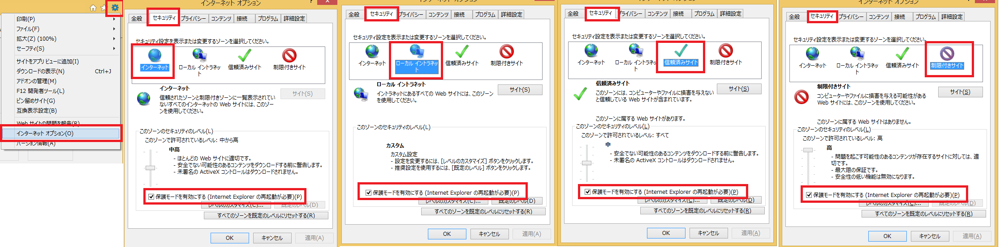

はじめに¶
pravas(LaLa Callポータルサイト)のテスト自動化方式を以下に示す。
1. テスト自動化¶
本作業におけるテスト自動化の対応範囲は、ユーザーインターフェース(UI) および データベース(DB) とする。
1.1 技術¶
テスト自動化にあたり、使用する技術、バージョンを以下に示す。
| 項目名 | バージョン | 用途 |
|---|---|---|
| python | 3.7.1 | メイン言語 |
| selenium | 3.7.0 | UI画面をテストするためのフレームワーク |
Selenium（セレニウム）はブラウザのオートメーションツールであり、 自動でブラウザを操作することでWebサイトの動作のテストを行うことができる。
1.2 UIテスト自動化¶
LaLa Call の画面テストを行う。
1.2.1 実行環境¶
テストコードは、スクリプト実行環境の差異によって、大きく影響を受けてしまうため、 以下に環境の詳細を示す。
1.2.1.1 PC環境¶
PC 環境を以下に示す。
| OS | アーキテクチャ | 備考 |
|---|---|---|
| Windows 10 pro | x64 | - |
本案件で作成する自動化テストコードは、Windows 以外の環境(Mac, Linux)では、起動不可となる。
1.2.1.2 python 環境¶
Python のライブラリを利用して、開発を行う。 環境構築は virtualenvを使用して、端末に依存しない仮想環境を構築する。
*インストールするモジュール
| モジュール名 | 用途 |
|---|---|
| selenium | seleniumモジュール |
| coverage | カバレッジ率出力モジュール |
| html-testRunner | htmlレポート出力モジュール |
| unittest-xml-reporting | xmlレポート出力モジュール |
上記のモジュールは、requirements.txt に定義する。
selenium==3.7.0
coverage
html-testRunner
unittest-xml-reporting
virtualenv 仮想環境に入って、以下のコマンドを実行するとモジュールのインストールができる。
pip install -r requirements.txt
1.2.2 Selenium ドライバ¶
seleniumをpython利用するためには、webドライバを準備する必要がある。 また、ブラウザの種類によって、webドライバを使い分ける必要がある。
| ブラウザ名 | ドライバ名 | バージョン | インストール先 |
|---|---|---|---|
| Chrome | ChromeDriver | ChromeDriver 2.44 | INSTALL |
| Edge | MicrosoftWebDriver | 6.17134 | INSTALL |
| Firefox | geckodriver | v0.23.0 | INSTALL |
| IE | IEDriverServer | IEDriverServer_Win32_3.9.0 | INSTALL |
- Webドライバは、python.exe と同じディレクトリ(venv > Scrips)配下に配置する必要がある
- 上記は、Windows 環境専用のドライバとなる。
1.2.3 ブラウザの基本の設定¶
- 表示倍率100%
Internet Explorer では、表示倍率が 100% でない場合、 Selenium が実行できない。 また、画像エビデンスをとるため、表示倍率は全てのブラウザで 100% にしておく必要がある。
- セキュリティの設定
Internet Explorer のブラウザを開き、「インターネットオプション」-> 「セキュリティ」タブに移行して、 以下の項目すべてに対して、「保護モードを有効にする」 の設定が必要になる。

1.3 DBテスト自動化¶
DBの入出力テストを行う。
2. パッケージ構成¶
パッケージは、以下の通りとなる。
| パッケージ名 | 用途 | 補足 |
|---|---|---|
| pravas | 親パッケージ | ルートパッケージ |
| common | 子パッケージ | 共通定義部品パッケージ |
| locators | 子パッケージ | 画面部品パッケージ |
| page_model | 子パッケージ | 画面モデルパッケージ |
| scenario | 子パッケージ | テストシナリオパッケージ |
テストの実行は、以下のように行う。
pravas パッケージと同じフォルダで、コマンドラインから以下を実行する。
1. 個別に実行する
python -m unittest pravas.scenario.test_login_page
2. まとめて実行する
python -m unittest discover
# ファイルとして実行
runner.py pravas
3. テスト結果¶
テスト結果を、ログ・画面エビデンス・レポートの形式のいずれかで残す。
3.1 ログ¶
テストコードの作業ログを取得する。
格納場所は、pravas パッケージと同階層に evidence/logs フォルダを作成し、 テスト画面に合わせてサブフォルダを作成し、保存する。
例) ログイン画面の場合
pravas_aut_test
|-pravas
|-evidence
|-logs
|-login_page
|-top_page
3.2 画面エビデンス¶
画面操作のエビデンスを png 形式で取得する。
格納場所は、pravas パッケージと同階層に evidence/screen_shot フォルダを作成し、 テスト画面に合わせてサブフォルダを作成し、保存する。
pravas_aut_test
|-pravas
|-evidence
|-screen_shot
|-login_page
|-top_page
尚、以下の関数で画面エビデンスを取得する。
# スクリーンショット取得関数
def get_screen_shot(description, page):
page.webdriver.get_screenshot_as_file(f'{LOGIN_PATH}/{description}.png')
# 呼び出すとき
get_screen_shot("項目番号_イベント名", page)
例)
get_screen_shot("項目1_画面を開く", page)
3.3 レポート¶
レポートの種類は、XML レポート、HTML レポート、カバレッジレポートの 3 種類あるので、 用途に合わせて取得すること。
格納場所は、pravas パッケージと同階層に evidence/reports フォルダを作成し、 テスト画面に合わせてサブフォルダを作成し、保存する。
pravas_aut_test
|-pravas
|-evidence
|-reports
|-login_page
|-top_page
unittest-xml-reporting - XML 形式でテスト結果を出力
python -m xmlrunner pravas\scenario\test_login_page.py
PyUnitReport - HTML 形式でテスト結果を出力
python login_page_runner.py
coverage - カバレッジレポートを出力
coverage run -m unittest discover
coverage report -m